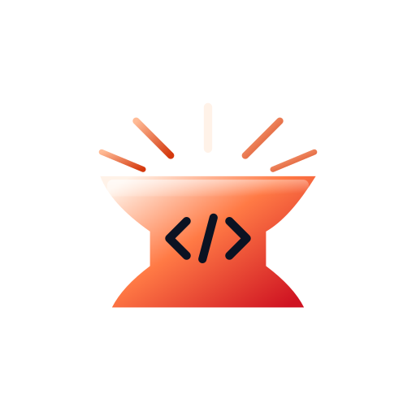
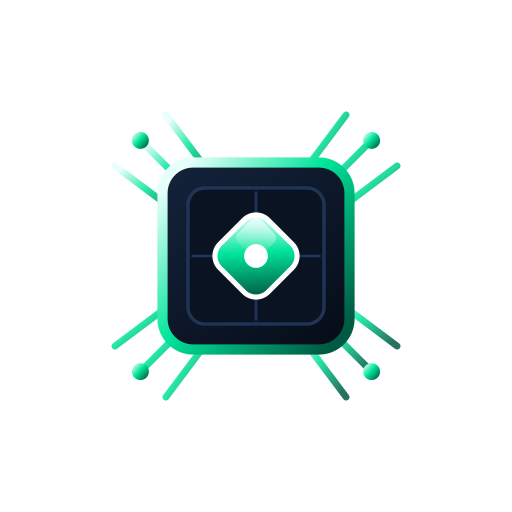

Unify trust. Orchestrate systems. Automate outcomes. CAIRN inserts a deterministic governance and dual-runtime verification plane between enterprise user intent and model execution.

Default-deny governance intercepts every model action, script, and API call before host execution. Where Docker or Windows Sandbox is present, unverified code runs in an ephemeral sandbox instead of on the host — and where neither is, CAIRN records the result as static-only rather than reporting a pass.
End-to-end telemetry across all agent runtimes, LLM endpoints, token expenditures, and cryptographic verification ledgers in one cohesive control plane.
Turn high-level compliance mandates into runtime policies with tiered assurance and structured audit output your SIEM can ingest.
A fixed 7-stage execution pipeline enforcing schema contracts, hardware isolation, and cryptographic provenance from prompt ingress to verified telemetry. The governance decision is deterministic; model output is not, and CAIRN does not claim otherwise.
 PATH
PATH
 CAIRN
CAIRN
 COMPASS
COMPASS
 ATLAS
ATLAS

FORGE CRUCIBLE
CAIRN
FORGE
CRUCIBLE
— If a request or payload fails security or schema validation, execution is halted immediately and the refusal is recorded. Static analysis is advisory by design — it raises the assurance an action requires and never grants permission, because pattern matching cannot decide safety over a Turing-complete language.
PATH
COMPASS
ATLAS
— Informational telemetry, reasoning chains, and graph memory; validation warnings are surfaced to operators without halting execution.
CRUCIBLE
CAIRN
FORGE
CRUCIBLE
— If a request or payload fails security or schema validation, execution is halted immediately and the refusal is recorded. Static analysis is advisory by design — it raises the assurance an action requires and never grants permission, because pattern matching cannot decide safety over a Turing-complete language.
PATH
COMPASS
ATLAS
— Informational telemetry, reasoning chains, and graph memory; validation warnings are surfaced to operators without halting execution.
The stacked cairn symbol represents the physical architecture: from user intent to cryptographic evidence.
Schema validation, AST parsing, and prompt injection filters before code touches any system.
CAIRN
PATH
Operator-declared autonomy ceilings, egress allow-listing, and secret redaction — measured at 0.20–0.26 ms for a decision that does not run code.
COMPASS
Dynamic hardware-isolated dispatch to Linux Docker or Windows Sandbox Hyper-V micro-VMs.
CRUCIBLE
FORGE

ACCELERATORTamper-evident SHA-256 decision records, structured JSONL audit output, and exportable evidence bundles your auditor can verify without running CAIRN.
ATLAS
COMPASS
Each layer builds deterministically upon the foundations below it. If any lower tier fails verification, execution halts immediately with zero side effects.
Explore 4-Tier ArchitectureEvery recommendation and automated action is graded across 6 deterministic assurance tiers.
Raw LLM string or unparsed script.
AST syntax parsing and secret regex scan.
Ephemeral container run with read-only root.
Zero network egress & disk delta confirmed.
Identical output across multi-run seed tests.
Safely repeatable without state corruption.
These are grades an action is assigned, not stages every action passes through. Tier 2 and above require Docker or Windows Sandbox to be present; where neither is, the result is recorded as static-only with the reason, never downgraded silently to a pass. Tiers 4 and 5 are reached rarely by design.
CAIRN integrates natively with your existing security perimeter, SIEM pipelines, and sovereign cloud infrastructure.
Native Hyper-V micro-VM hardware virtualization on Windows 11 & Windows Server.
The two verification backends: Linux containers with a read-only rootfs and no network, or a disposable Hyper-V micro-VM on Windows.
Every decision is written as structured JSONL, a format chosen so it can be shipped to a SIEM or log pipeline. CAIRN ships no vendor-specific connector.
A GitHub evidence connector, plus an inbound MCP gateway so Claude Code and other MCP clients call CAIRN-governed tools.
CAIRN is distributed as unsigned binaries with a signed checksum manifest. Access documentation, architecture guides, issue tracking, and binary distributions on GitHub Releases.
SHA256SUMS.txt) is signed with Ed25519 and published with every release, so you can confirm the files you received are the files that were built. The binaries themselves are not code-signed — there is no certificate from a certificate authority, so Windows will warn on download. That is a cost this project has not taken on, and the warning means the publisher has not paid for an identity check rather than that the file is dangerous.